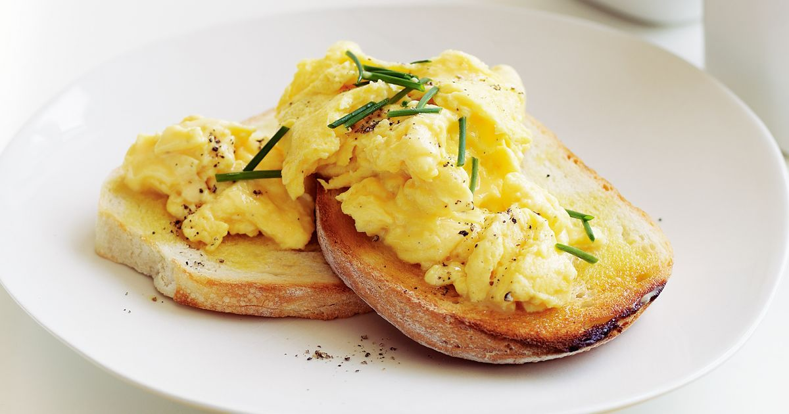

Scrambled Eggs Recipe

Description
Fast and delicious egg for the whole family
Easy to make and budget friendly
Ingredients
- 4 large eggs
- 1 pinch salt
- 4 teaspoons butter
Directions
- Whis eggs with salt until completely combined and very foamy.
- Melt butter in a skillet over low heat until bubbling. Add whisked eggs; cook, stirring
frequently for even, moist curds, until thickened and creamy, but still shiny, 2 to 3
minutes.
- Removed scrambled eggs from the pan before they begin to look dry, as they will
continue to thicken off the heat.